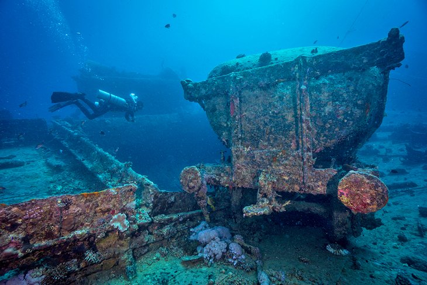
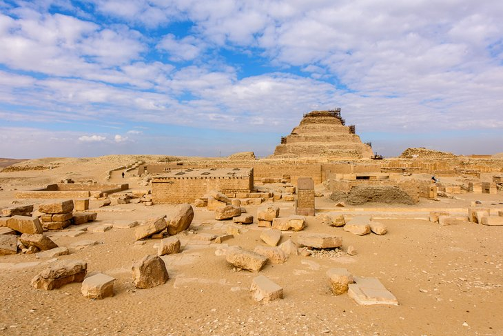

1. Pyramids of Giza:

The last surviving of the Seven Wonders of the Ancient World, the
Pyramids of Giza are one of the world's most recognizable landmarks.
Having awed travelers down through the ages, these tombs of the
Pharaohs Cheops (Khufu), Chephren (Khafre), and Mycerinus (Menkaure),
guarded by the enigmatic Sphinx, are usually top of most visitor's
lists of tourist attractions to see in Egypt and often the first sight
they head to after landing. Today, sitting on the desert edge of
Cairo's sprawl, these megalithic memorials to dead pharaohs are still
as wondrous a sight as they ever were and an undeniable highlight of
any Egypt trip.
2. Luxor's Karnak Temple and the Valley of the Kings

Famed for the Valley of the Kings, Karnak Temple, and the Memorial
Temple of Hatshepsut, the Nile-side town of Luxor in Upper Egypt has a
glut of tourist attractions. This is ancient Thebes, power base of the
New Kingdom pharaohs, and home to more sights than most can see on one
visit. While Luxor's East Bank holds the modern city, with its vibrant
souq; the two temples of Karnak and Luxor; and the museum; the West
Bank's lush farmland and barren cliffs are where the vast majority of
Luxor's tourist attractions sit, with so many tomb and temple sights
that it has been called the biggest open-air museum in the world.
Spend a few days here exploring the colorful wall art of the tombs and
gazing in awe at the colossal columns in the temples, and you'll see
why Luxor continues to fascinate historians and archaeologists.
3. Cruising the Nile

Egypt is defined by the Nile. For many visitors, a multi-day cruise
upon this famed waterway that saw the rise of the Pharaonic era is a
highlight of their Egypt trip. Cruising the Nile is also the most
relaxing way to see the temples that stud the banks of the river on
the route between Luxor and Aswan, plus sunrise and sunset over the
date-palm-studded river banks, backed by sand dunes, is one of Egypt's
most tranquil vistas. The two famous sights on a Nile Cruise are the
Temple of Kom Ombo and Edfu's Temple of Horus, where all the big
cruise boats stop. If you'd prefer a less crowded and slower
experience, though, and don't mind "roughing it" a bit, you can also
cruise the Nile by felucca (Egypt's traditional lateen-sailed wooden
boats), which also allows you to create your own itinerary. The vast
amount of cruise boat itineraries depart from either Luxor and Aswan,
but feluccas can only be chartered for multi-day trips from Aswan.
4. Aswan

Egypt's most tranquil town is Aswan, set upon the winding curves of
the Nile. Backed by orange-hued dunes, this is the perfect place to
stop and unwind for a few days and soak up the chilled-out atmosphere.
Take the river ferry across to Elephantine Island and stroll the
colorful streets of the Nubian villages. Ride a camel to the desert
monastery of St. Simeon on the East Bank. Or just drink endless cups
of tea on one of the riverboat restaurants, while watching the
lateen-sailed feluccas drift past. Make sure to jump aboard a felucca
at sunset to sail around Aswan's islands. This is by far, Aswan's most
popular activity and the most relaxing way to take in the local
sights. There are plenty of historic sites here and numerous temples
nearby, including Philae Temple on its island, but one of Aswan's most
popular things to do is simply kicking back and watching the river
life go by.
5. Abu Simbel

Even in a country festooned with temples, Abu Simbel is something
special. This is Ramses II's great temple, adorned with colossal
statuary standing guard outside, and with an interior sumptuously
decorated with wall paintings. Justly famous for its megalithic
proportions, Abu Simbel is also known for the incredible engineering
feat carried out by UNESCO in the 1960s, which saw the entire temple
moved from its original setting to save it from disappearing under the
rising water of the Aswan dam. Today, exploring Abu Simbel is just as
much about admiring the triumph of this international effort to save
the temple complex as it is about gaping in wonder at Ramses II's
awe-inspiring building works, itself.
6. Diving the Red Sea

Below the Red Sea's surface is another world as fascinating as the
temples and tombs on land. The coral reefs of the Red Sea are renowned
among scuba divers for both the soft corals on display and the vast
amount of sea life, ranging from colorful reef fish and nudibranchs,
to sharks, dolphins, turtles, rays, and even dugongs. For divers, the
most famous town to base yourself in is Sharm el-Sheikh on the Sinai
Peninsula, closest to the reefs of Ras Mohammed National Park, as well
as the reefs of the Straits of Tiran. To dive the sites of the Straits
of Gubal head to Hurghada or El Gouna on the Red Sea coast, while
advanced divers should check out the resort of Marsa Alam, the nearest
base for diving Egypt's "deep south" dive sites.
As well as fish life and coral, the Red Sea is a major wreck-diving destination. The most famous wreck is the Thistlegorm, a British WWII cargo ship that was on its way to resupply Allied troops when it was bombed by the Germans in 1941. Today the site is regarded by divers as one of the top five wreck dives in the world due to the vast cargo of cars, motorbikes, and WWII memorabilia that can be seen both scattered on the sea bed around the wreck and inside the ship itself. Dive boat trips to the wreck are organized from both Sharm el-Sheikh and Hurghada.
As well as fish life and coral, the Red Sea is a major wreck-diving destination. The most famous wreck is the Thistlegorm, a British WWII cargo ship that was on its way to resupply Allied troops when it was bombed by the Germans in 1941. Today the site is regarded by divers as one of the top five wreck dives in the world due to the vast cargo of cars, motorbikes, and WWII memorabilia that can be seen both scattered on the sea bed around the wreck and inside the ship itself. Dive boat trips to the wreck are organized from both Sharm el-Sheikh and Hurghada.
7. Explore Islamic Cairo

The atmospheric, narrow lanes of the capital's Islamic Cairo district
are crammed full of mosques, madrassas (Islamic schools of learning),
and monuments dating from the Fatimid through to the Mameluke eras.
This is where you'll find the labyrinth shopping souk of Khan
el-Khalili, where coppersmiths and artisans still have their tiny
workshops, and stalls are laden with ceramics, textiles, spice, and
perfume. Surrounding the market is a muddle of roads, home to some of
the most beautiful preserved architecture of the old Islamic empires.
There is a wealth of history here to explore. Visit Al-Azhar Mosque
and the dazzling Sultan Hassan Mosque, and make sure you climb to the
roof of the ancient medieval gate of Bab Zuweila for the best
minaret-speckled panoramas across the district.
8. South Sinai's Beach Life

Egypt's South Sinai region, on the Sinai Peninsula, offers a beach for
every type of traveler. Sharm el-Sheikh is a European-style resort
town packed full of luxury hotels, international restaurants, and bags
of entertainment options. A favorite with Europeans on winter-sun
vacations, many of the resorts here cater to families on one- or
two-week sun-and-sand breaks. Dahab is a low-key beach town with a
budget-traveler heart, which is just as much about desert excursions
and adventures as the sea. It's particularly known for its cheap
dive-package deals and for its lagoon beach area where windsurfing and
kitesurfing are the top activity. Up the coast, between the port town
of Nuweiba and the border town of Taba, are the bamboo hut retreats
that offer complete get-away-from-it-all respites from life and
back-to-basics beach life.
9. Saqqara

Everyone's heard of Giza's Pyramids, but they're not the only pyramids
Egypt has up its sleeve. Day-tripping distance from Cairo, Saqqara is
a vast necropolis of tombs and pyramids that was utilized during every
era of pharaonic rule. It's best known for its Old Kingdom Step
Pyramid, which shows how the architects of Ancient Egypt advanced
their engineering knowledge to finally create a true pyramid shape.
There's much more to see beyond the Step Pyramid, though, with some of
the surrounding tombs, such as the Mastaba of Ti, showcasing some of
the finest tomb paintings you'll see in the country. Nearby, the
pyramid site of Dahshur is home to the Red Pyramid and Bent Pyramid,
which should be included on any Saqqara visit.
10. Egyptian Museum

A treasure trove of the Pharaonic world, Cairo's Egyptian Museum is
one of the world's great museum collections. The faded pink mansion in
downtown Cairo is home to a dazzling amount of exhibits. It's a
higgledy-piggledy place, with little labeling on offer and
chronological order severely lacking, but that's half of its
old-school charm. The museum's two highlight collections are the haul
of golden treasures unearthed from Tutankhamen's tomb in the Valley of
the Kings and the fascinating Royal Mummies exhibit room. Every corner
you turn here, though, is home to some wonderful piece of ancient art
or statuary that would form a highlight of any other museum.